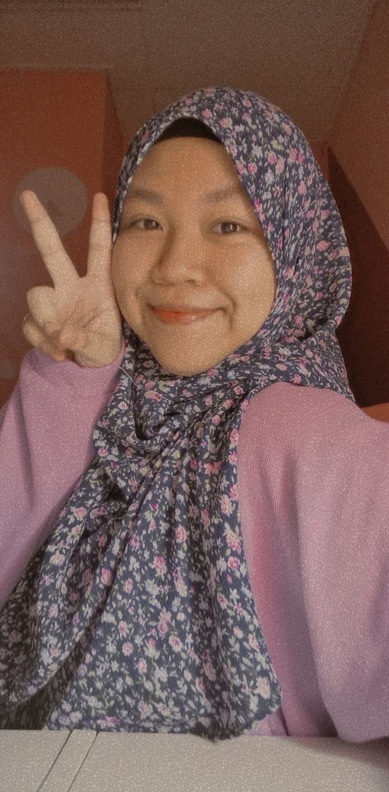
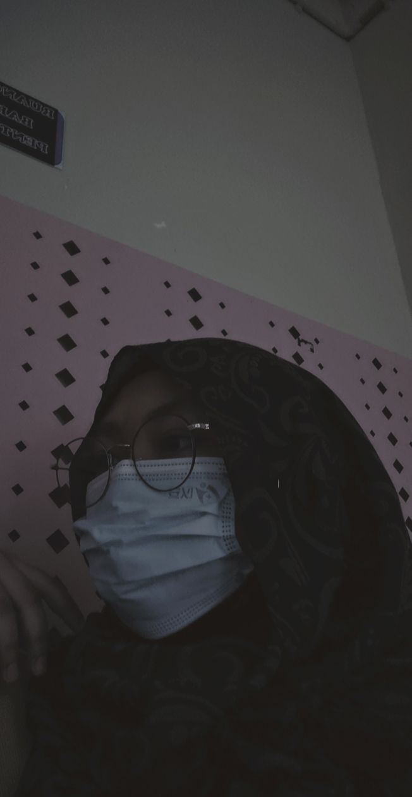
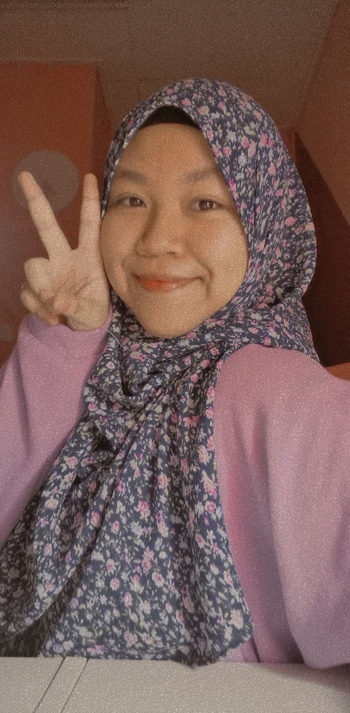
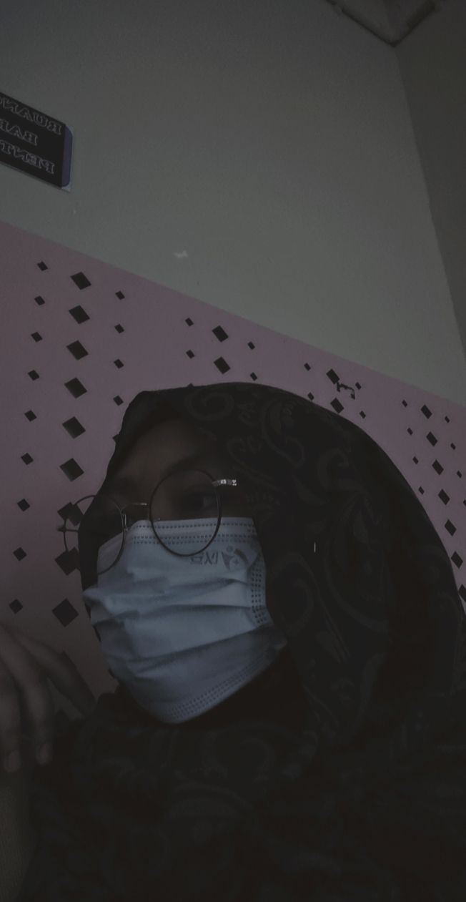
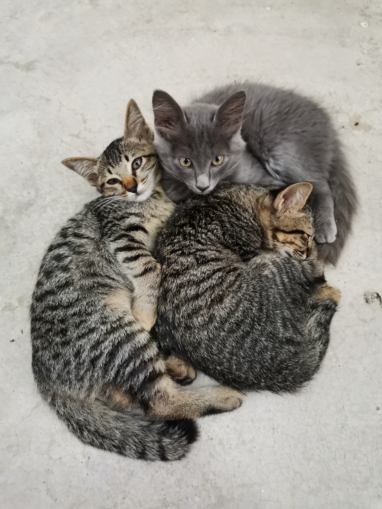
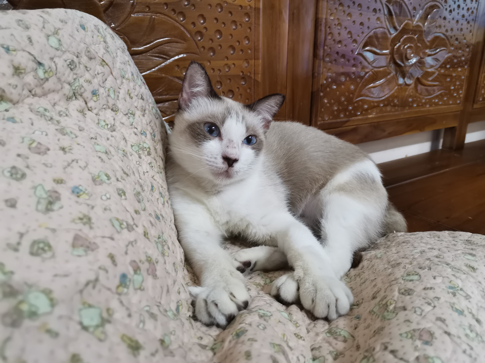
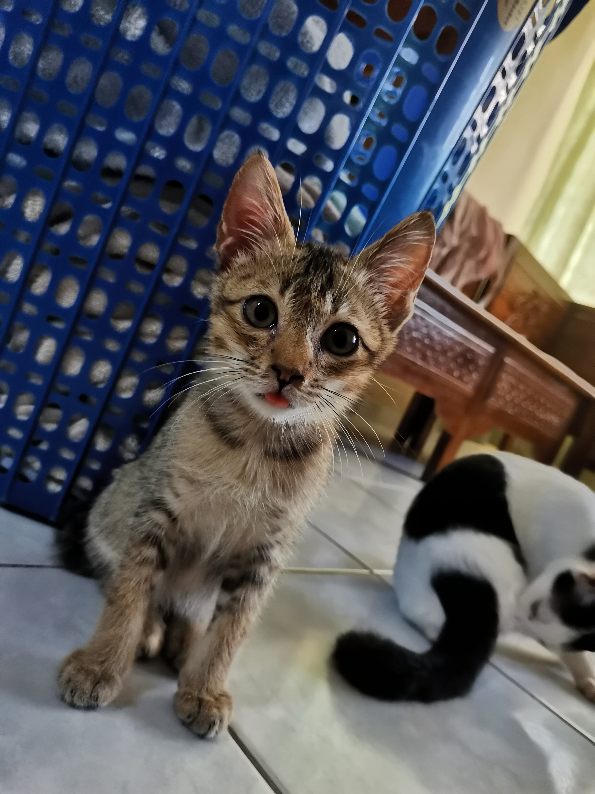
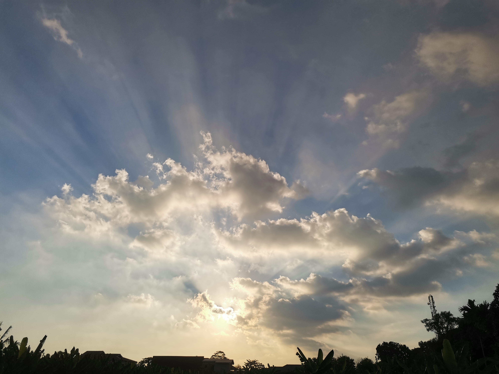
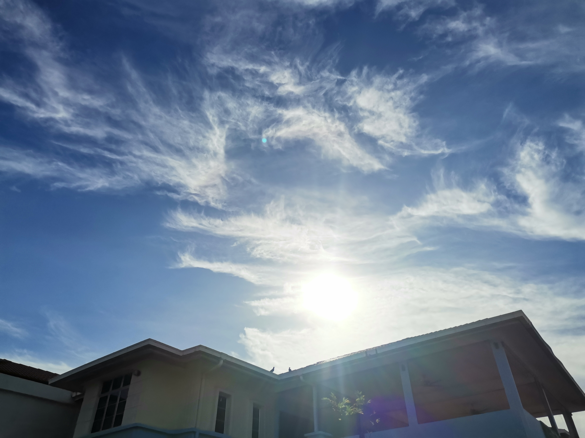

About Me
 




The name given is Siti Nurliyana Binti Mohd Nazri. I'm spending my life searching for real me, to be better days by days. I'm just an ordinary girl who have such a normal life full of love and hate. I can say that I gain energy by spreading positive vibes and happiness to people around me even if my days are not as good as people think. Also, I love silent moment because it allows me to thinks better and evaluates each action I have done throughout the day. So, i will have alone time everyday to let out all my ill thoughts and ready for the next day. But, do not worry, I rarely feel lonely when I'm alone. Instead, I often feel lonely when I'm in a group of humans!
  
Cats. I love them! I can stand my allergy to them as long as I can touch and caress that fluffy animal forever. However, my allergy is not that serious so I don't have to take medications or supplements. As I keep my sanitation well, I am good to be near with the cats. To add, I have a clowder of cats that I have been taken care of since younger but unfortunately, some of them died. I am looking forward to live with new cats.
 
Do you know that I am nephophilia? Nephophilia is someone who loves or obsesses of clouds. I do not notice that I am one of them until my habit taking photographs of clouds was told by my mother. Then, I realized. I have tons of clouds pictures taken using my smartphone. Other than clouds, I'm also cherishing sunrise and sunset scenery. Now, let's enjoy a time-lapse of sunset I've taken from my grandparents' house view!